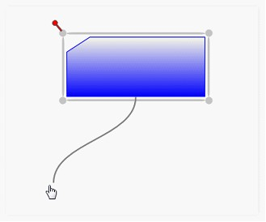
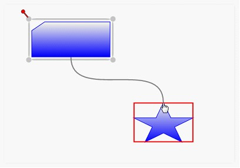
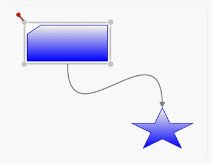
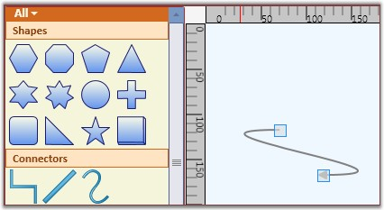
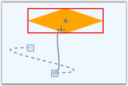
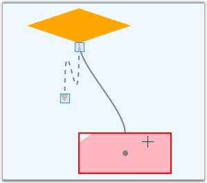

1. First set the EnableConnection property of DiagramView to true. This has to be set to true every time the user makes a connection.
2. Press the left mouse button while the pointer is moved over the node where the connection is to start. This acts as the head node for the connector.
3. While the left button is pressed, drag the pointer to the node to which you want to create a link. The cursor will change to a cross while dragging.
 Note: If a node is not hit when making a
connection, then no connector gets added.
Note: If a node is not hit when making a
connection, then no connector gets added.

Figure 47: Connector DragStart
4. When you click any node in the process, you can see an adorner showing the way the link will look when created.

Figure 48: HitNode
5. Release the left button over the target node where you want to connect. This acts as the tail node for the connector and hence the link is created.

Figure 49: Connection Ended
The connector's path geometry is dynamically created based on the start and end points and the connector type.
It is also possible to drag-and-drop line connectors from the SymbolPalette. Three shapes of the line connectors have been added in a group named “Connectors”. The desired line can be dragged onto the page. Initially, the headnode and the tail node will be null. The steps to be followed to add a line connector from the SymbolPallete are as follows:
1. Drag the desired line connector onto the page.

Figure 50: Bezier Line added to the Page
2. Then drag the head thumb of the line connector to the desired node to make a connection.

Figure 51: Dragging the Head Thumb
3. Similarly drag the tail thumb of the line connector to the desired node. Now, this creates a link between the two nodes.

Figure 52: Dragging the Tail Thumb